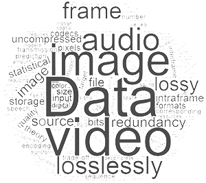
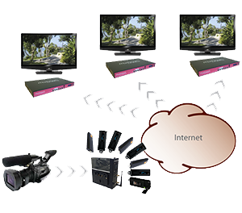
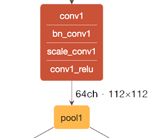
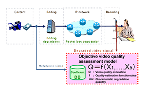

|
Miaohui Wang Ph.D. 
Assistant Professor (tenure-track), Shenzhen University (SZU)
Ph.D. (CUHK), IEEE Member
Tel: +86-0755-2665-9561
Email: wang.miaohui[#AT#]gmail[dot]com or mhwang[#AT#]link[dot]cuhk[dot]edu[dot]hk or mhwang[#AT#]szu[dot]edu[dot]cn
Dr. Miaohui Wang (S'13-M'16) received the Ph.D. degree in 2015 under the supervision of Prof. King Ngi Ngan (IEEE Fellow, IET Fellow, National Thousand Talents Program) from Department of Electronic Engineering, The Chinese University of Hong Kong (CUHK), PRC. From 2014 to 2015, he was with the Innovation Laboratory, InterDigital Inc., San Diego, CA, USA. Since 2015, He was a senior research engineer working on computer vision and machine learning in The Creative Life (TCL) Research Institute of Hong Kong until joined Shenzhen University as an assistant professor in 2017. Now, He is with College of Information Engineering, Shenzhen University (SZU)
He was the recipient of the Best Thesis Award of Shanghai (Ministry of Education of Shanghai City) and Fudan University in 2012, PRC. He has authored or co-authored numerous technical papers in international journals and conferences. His current research interests cover a wide range of topics related with image/video compression, transmission and analysis, computer vision and machine learning. He is a member of the IEEE Circuits and Systems Society.
- National Natural Science Foundation of China (NSFC), No 61701310, 2018.01-2020.12, 280,000 RMB.
- Startup Fund by Shenzhen University, 2018.01-2019.12, 60,000 RMB.
- Free Exploration Project Fund of Shenzhen, 2019.01-2021.12, 300,000 RMB.
- Overseas High-Caliber Personnel Fund, 2019.01-2021.12, 3,000,000 RMB.
- Xiaoming Chen (postgraduate student, since Sep. 2018), Deep-learned representations for video processing.
- Jialin Zhang (postgraduate student, since Sep. 2018), Deep-learned representations for video processing.
- Weiqian Chen (postgraduate student, since Sep. 2017), Deep-learned representations for video processing.
- Jiaxin Lin (postgraduate student, since Sep. 2017), Image/video quality assessment.
- Ying Chen (FYP student, 2018-2019), Compressed video quality assessment.
- Qionglin Zheng (FYP student, 2018-2019), Video super-resolution.
- Xiaofeng Luo (FYP student, 2018-2019), Video super-resolution.
- Yue Hu (FYP student, 2018-2019), Video saliency detection.
- Min Wang (FYP student, 2017-2018), License plate recognition based on low-resolution images.
- Fujian Li (FYP student, 2017-2018), Real-time face recognition with FaceNet.
- Guoming Chen (FYP student, 2017-2018), Deep learning-based image retrieval.
- Wenshuo Feng (FYP student, 2017-2018), Deep learning-based image artistic style transfer.
- Huoli Li (FYP student, 2017-2018), Automatic coloring of black-and-white photographs.
- Wujun Zeng (FYP student, 2017-2018), Image quality assessment method-based on visual attention.
- Weihuang Wen (FYP student, 2017-2018), Artistic style conversion of digital images.
- Zhenxin Liu (FYP student, 2017-2018), License plate recognition system.
- I was recognized as the Overseas High-Caliber Personnel (Level C) by Shenzhen Government.
- I'm looking for Postdoctoral Fellows in computer vision, machine learning and visual signal processing. Competitive salary！！！
Drop your CV to me.
- I'm looking for highly talented undergraduates and postgraduates.
- 组里高薪(税后30W+)聘[博士后]及[专职研究人员]若干名，请直接联系我!
- 组里现招有潜力的数学·计算机·电子信息方向的高年级[本科生]以及攻读学历的[硕士]研究生若干名，请联系我!
| Video signal/Point clouds/Deep model Compression |
Video transmission and analysis |
Computer Vision |
Machine Learning |
Video Quality Assessment |
|  |
 |
|
 |
 |
| Memberships |
|
| Journal Reviewer |
- IEEE Transaction on industrial electronics
- IEEE Transactions on Image Processing
- IEEE Transactions on Circuits and Systems for Video Technology
- IEEE Transactions on Multimedia
- IEEE Transactions on Broadcasting
- IEEE Journal on Emerging and Selected Topics in Circuits and Systems
- IEEE Access
- IEEE Signal Processing Letters
- IEEE Communications Letters
- ACM Transactions on Multimedia Computing Communications and Applications
- Elsevier Signal Processing
- Elsevier Signal Processing: Image Communication
- Elsevier Journal of Visual Communication and Image Representation
- Elsevier Neurocomputing
- Springer Signal, Image and Video Processing
- IET Image Processing
- IET Electronics Letters
|
| Conference Reviewer |
- Data Compression Conference (DCC)
- IEEE Picture Coding Symposium (PCS)
- IEEE International Conference on Multimedia and Expo (ICME)
- IEEE International Symposium on Circuits and Systems (ISCAS)
- IEEE International Conference on Image Processing (ICIP)
- IEEE International Conference on Acoustics, Speech, and Signal Processing (ICASSP)
- IEEE Visual Communications and Image Processing (VCIP)
- IEEE International Workshop on Multimedia Signal Processing (MMSP)
|
Last Update: 2018.
WANG MIAOHUI
All rights reserved.